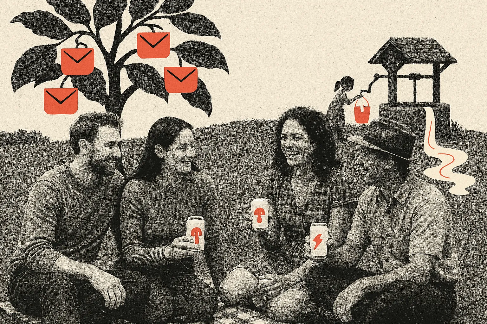
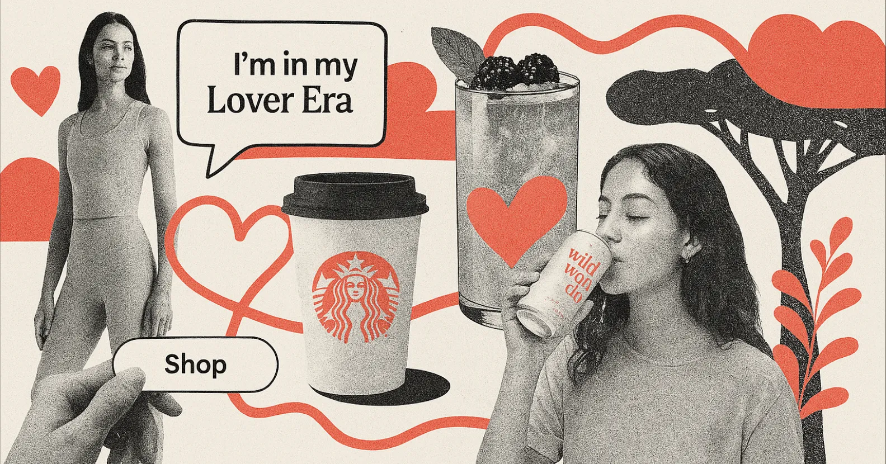
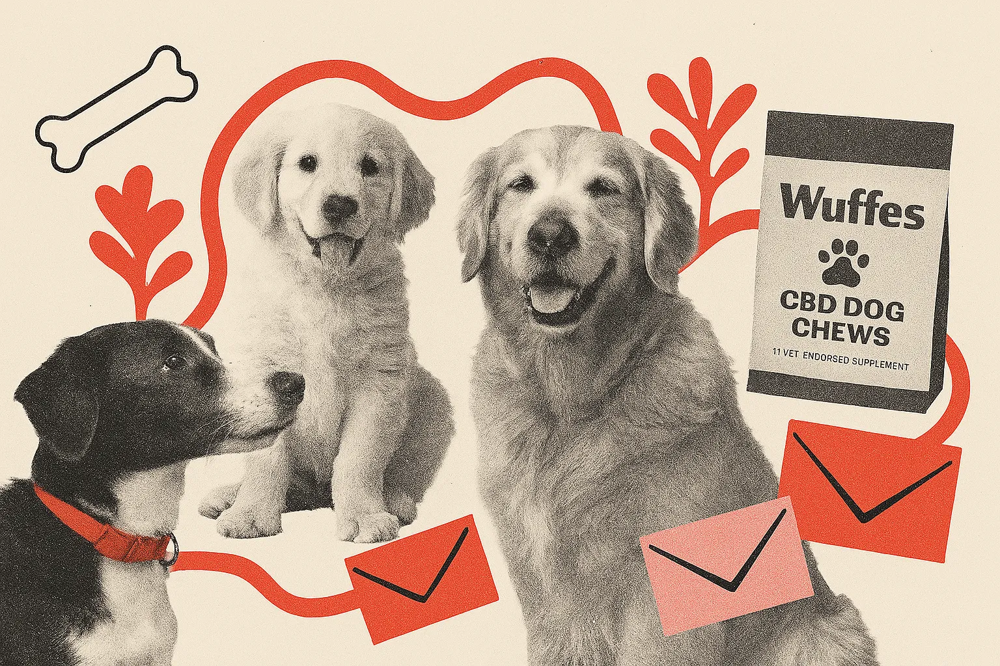
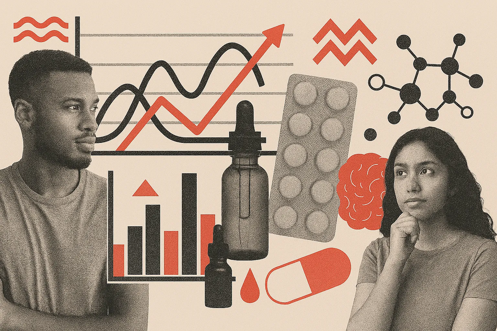
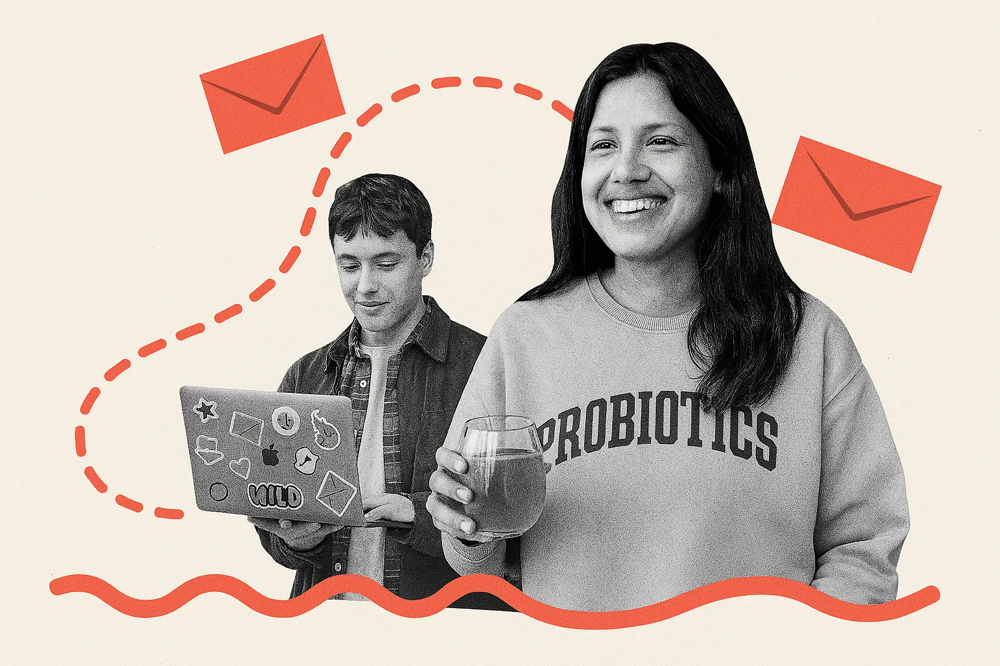
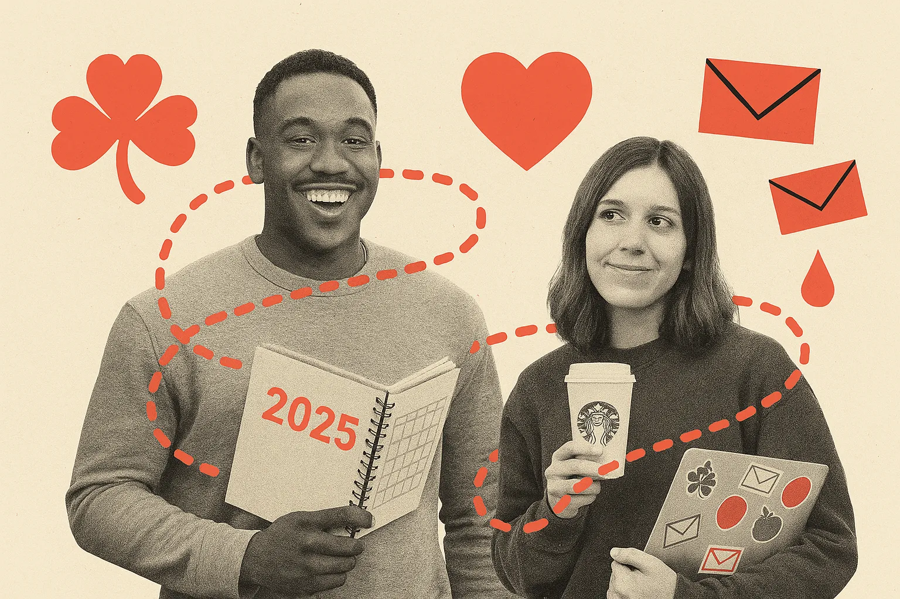

You can learn a lot about an industry by looking at what people save. Not what they click. Not what they delete. Not even what they open. What they save. That’s the gold. So we peeked into the treasure chest of the 100 most-saved emails on ReallyGoodEmails from Q1 2025 to see what was hitting right. Let me tell you: the vibes were vibing.
This wasn't your standard “Top Subject Lines” roundup. This was a masterclass in soft design, clinical trust-building, doggo content dominance, and onboarding emails that actually made us smile. We saw founder confessions that felt more like diary entries, caffeine alternatives that talked like nutritionists, and seasonal promos that managed to avoid every cliché in the book (no offense, Cupid).
If you’re building emails right now, this guide is your cheat code. Not just for what's trending, but for what email makers are actually taking the time to stash away in their swipe file consistently over months. So let’s dig in. Here's what Q1 2025 taught us about making Really Good Emails worth remembering.
For reference, here's the collection of the top 100 emails so far in 2025.
Mission-Driven Storytelling Was Everywhere
Founders were on the mic. Emails read like open letters, confessionals, or personal manifestos—sometimes funny, sometimes vulnerable, but always purposeful. These weren’t just about storytelling for the sake of it—they were about transparency and human connection. The best ones made you forget you were reading a brand email and feel like you were having a conversation with a person who actually cares.
This kind of voice-forward communication taps into what behavioral economists call identity-based marketing. It’s not just about features or benefits—it’s about saying, "we see you, and here’s why we exist." That kind of resonance builds brand loyalty at a deeper level. It’s also one of the most shared and saved content types because it's emotionally sticky. The rawer the voice, the better the grip.

Emails that nailed this approach:
- Everyday Dose: ADHD story turned mushroom coffee empire
- Bobbie: Breaking stigma around baby formula
- Patagonia: Earth is our only shareholder
- Rebel Rabbit: Cannabis seltzer with a movement
- Charity: Water: Celebrating $1 billion in donations
Why it worked: People don’t just want a product. They want belief systems. And these emails delivered on identity, voice, and cause without being preachy.
Softness & Sensory Language Dominated
Across fashion, wellness, fitness, and coffee brands, a dreamy, delicate tone took center stage. Words like "cloud-soft," "dreamy hues," and "lover era" were everywhere. The designs mirrored the copy: soft color palettes, rounded CTA buttons, and open layouts. This wasn’t just Valentine’s Day romance but a broader move toward brands speaking in emotive senses.

Emails that fit this trend:
- Lululemon: "New dreamy hues in Align have arrived"
- 1906: "I’m in my Lover Era"
- Starbucks: Pistachio, Blackberry Sage, and Cold Brew launches
Why it worked: The New Year often brings a shift toward wellness, self-care, and gentle resets. Brands that leaned into calm and clarity stood out.
Dog Content Still Wins (and Teaches)
Pet brands dominated the leaderboard with emails that were emotional, educational, or both. Whether it was CBD, travel tips, joint support, or a welcome to the “pack,” dog emails balanced warm fuzzies with functional utility.
If you read the RGE Newsletter, you may have also picked up on us catching this trend. “Happy” animals (like puppies or smiling golden retrievers) evoke brand loyalty and can cause additional bonds between the reader and the brand.

Top dog emails:
- Sundays: Tips, stories, and dog-friendly vacation guides
- Wuffes: Joint support breakdown and pack welcome
- Pet Releaf (via Sundays): CBD partnership
Why it worked: Pet parents are info-hungry and emotionally invested. These emails brought clarity and cuteness.
Wellness Got Clinical (in a Good Way)
Health brands aren’t dumbing things down. They’re getting sharper by dropping stats, diagrams, and clinical claims in sleek emails.

Notable examples:
- Buoy: Digestion drops vs. kombucha and electrolyte breakdowns
- ARMRA: Mythbusting melatonin and colostrum education
- Noom Med: Medication, coaching, and behavioral support
- GoodRx: Getting specific about costs
Why it worked: These emails respected the reader’s intelligence. Clear structure, solid evidence, and a mission-first tone helped them convert curious readers into believers.
There’s growing consumer trust in brands that present verifiable data. According to Edelman’s Trust Barometer, 59% of consumers say they trust healthcare companies more when they provide transparent, science-based evidence. These brands didn’t just tell us something was healthy; they showed us the receipts.
This strategy also plays well with the rise of the “conscious consumer.” Many shoppers, especially in wellness spaces, are actively researching ingredients, origins, and benefits before they buy. Emails that mirror this behavior—offering insight without condescension—build trust and encourage trial.
Onboarding & Welcome Emails Got Delightfully Weird
The best welcome emails this quarter didn’t play it safe. They leaned into weirdness, warmth, and brand soul. Whether you were onboarding to a SaaS platform or sampling sparkling probiotics, the emails made you feel like you were joining something joyful and not just signing up for a tool. It’s part humor, part hospitality, and it’s how brands are creating connection right out of the gate.
Welcome emails moved beyond the basics and into brand immersion. These weren’t "here’s your login" messages. They were fun, funny, and packed with personality.

Welcome emails worth collecting:
- Wildwonder: Bubbly prebiotic vibes + mocktail recipes
- Miro: Clean, gamified setup walkthrough
- Wuffes: Joint health meets dog-dad origin story
- Suffolk Libraries: Sticker maps and kid-focused motivatio
Why it worked: These helped new users feel part of something bigger and gave them a reason to come back.
Great onboarding isn’t just about instruction. It’s about emotion. According to the Nielsen Norman Group, first impressions in digital products form within 50 milliseconds, and email is often a user's very first branded interaction. These brands used that moment to build delight and trust, not just deliver facts.
Seasonal Relevance Without the Cheese
Seasonal marketing has matured. What once meant throwing a pumpkin or shamrock on a banner has evolved into something more nuanced. Smart brands are building around seasonal feelings: hope in January, coziness in February, renewal in March. They’re tapping into the psychology of where people are mentally and emotionally, not just what’s on the calendar. The result? Emails that feel relevant, not redundant.
Yes, Q1 includes New Year’s, Valentine’s, and St. Patrick’s Day. But the best-performing emails didn’t beat you over the head with shamrocks and Cupid. They found subtle, thematic ways to nod at the season.

Emails that nailed seasonal without cliché:
- eBay: “2025 is Yours for the Taking” – planners and storage with a fresh start theme
- Starbucks: Timed flavor returns (Pistachio, Shamrock, Blackberry Sage)
- Graza: “Put This in Your Cal” – gifting reminder
- Sayso: Dry January celebration with 20% off mocktail
Why it worked: These brands used seasonality as framing, not decoration.
Instead of loud graphics and punny subject lines, these emails embraced emotional alignment by matching campaigns with the way people feel at different moments in the calendar. “New year, new you” wasn’t shouted; it was whispered through a planner, a gentle flavor, or a fresh wellness habit.
There’s also a sophistication here: smart email marketers are shifting from date-based marketing to mood-based marketing. And it works. Studies from Adobe show consumers are more responsive to timely relevance that feels helpful versus holiday hype that feels hollow.
A Few Outliers Worth Studying
These emails didn’t fit cleanly into any trend category but they were still widely saved, likely for their uniqueness or inspiration value.
Patagonia – "Listen to Patagonia Stories" A simple email promoting their narrated podcast stories. No products. No urgency. Just thoughtful writing and a quiet invitation to connect.
Pelago – “The Pelago App Just Got a Major Upgrade” This one stood out for its clean, UI-focused design paired with practical utility. It’s a rare example of a B2B-style layout that manages to feel modern and friendly without being sterile.
ARMRA – "Melatonin Mythbuster" This email dives deep into what melatonin does beyond sleep. Packed with citations, mitochondria talk, and functional benefits, it reads like a white paper but remains accessible.
Seager – “Spring ‘25 is Live” This one breaks the mold in that no products are shown "above the fold." It's just a cinematic photograph of a barn with motorcycles and two guys standing around a fire. But the feeling it evokes is a ruggedness worth exploring. There's no urgency or overly clever copy. Yet, if you want to feel like those two guys do, the imagery is enough.
Lamborghini – “Still Thinking?” On first scroll, you’d be forgiven for thinking this was an email about supercars. That’s the bait. The switch? It’s actually an abandoned cart reminder... for wine. It uses automotive-level branding to elevate a totally different product category. The surprise factor might’ve confused some—but it clearly intrigued enough people to get saved.
And some design trends
Gone are the neon gradients and eye-popping saturation that dominated previous trends. This quarter, brands leaned into more soothing visual territories, choosing colors that feel grounded, inviting, and easy on the eyes. Pastels, off-whites, and dusty pinks made frequent appearances, while muted greens and soft beiges conveyed an organic, wellness-forward feel. Pet brands and supplement emails often embraced these earthy tones to signal purity and approachability.
Meanwhile, tech and clinical brands stuck to high-contrast black-and-white or grayscale palettes, reinforcing their authority and precision without sacrificing clarity. Across the board, this calmer color direction gave emails a polished, modern tone that prioritized legibility and reduced visual fatigue.
But most importantly was the layout. Many emails in Q1 leaned into vertical space, especially at the top. Hero images were allowed to breathe (with big margins, soft gradients, and minimal overlays), sometimes pushing the core messaging or CTAs further down. This shift embraced modern scrolling behavior rather than fighting it.
Why they work together: Instead of overwhelming the reader with dense content or loud visuals, these emails invited them to slow down, absorb the vibe, and explore at their own pace. Together, they created an experience that felt more like browsing a well-designed website than skimming a marketing message.
In a world where inboxes are flooded with forgettable promos, the best-performing emails this quarter reminded us that relevance isn’t enough—you need resonance. The emails people saved weren’t just well-timed or well-designed; they mattered. They brought personality, precision, beauty, and bravery. They were the kind of emails that didn’t just sell, but stuck with you.
So whether you’re designing your next campaign or overhauling your welcome flow, take a cue from what people held onto. Be useful. Be intentional. Be a little weird. And above all, be worth saving.